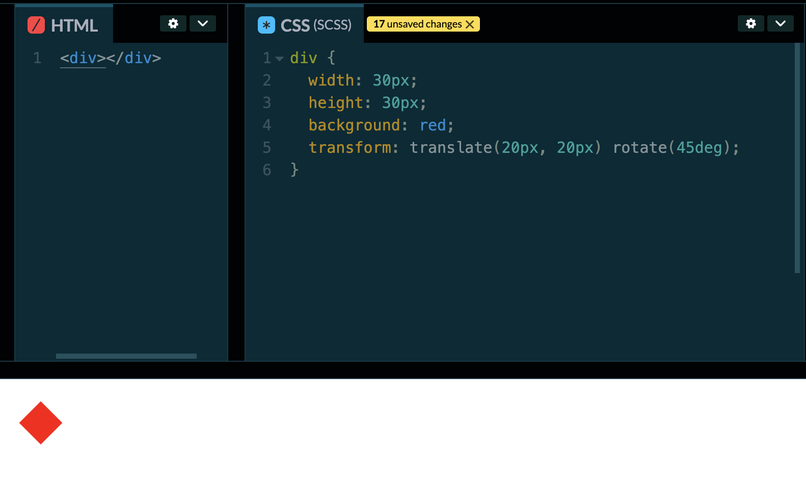
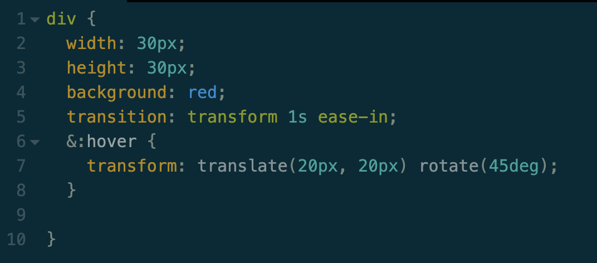

Transform
Tranform is a css attribute that allows you to adjust coordinate space for an element. It can be used to change the position or behavior of an element.
- matrix
- translate
- translate(x,y)
- translateX(x)
- translateY(y)
- scale
- rotate
- skew
Transform Types
Transform can take several types. For example, you could rotate and translate on a single transform:
Translate and rotate are my usual go-to types when using transform. Both are especially good for creating your own shapes using CSS.
Transitions
Transition is used to control the way and animation or transformation take place when the state of an element is changed. It controls how long it takes an element to transition from one state to another. It also has transition types that allow the designer to decide how to transition in a way that seems natural. The changed state is activated by using psudo classes like :hover or :clicked.
In order to do a transition you have to provide a parameter indicating the CSS rule that you want to transition.
Here is a list of the differnt animatable elements that can be transitions:
- background
- background-color
- background-position
- background-size
- border
- border-bottom
- border-bottom-color
- border-bottom-left-radius
- border-bottom-right-radius
- border-bottom-width
- border-color
- border-left
- border-left-color
- border-left-width
- border-right
- border-right-color
- border-right-width
- border-spacing
- border-top
- border-top-color
- border-top-left-radius
- border-top-right-radius
- border-top-width
- bottom
- box-shadow
- clip
- color
- column-count
- column-gap
- column-rule
- column-rule-color
- column-rule-width
- column-width
- columns
- filter
- flex
- flex-basis
- flex-grow
- flex-shrink
- font
- font-size
- font-size-adjust
- font-stretch
- font-weight
- grid
- grid-area
- grid-auto-columns
- grid-auto-flow
- grid-auto-rows
- grid-column
- grid-column-end
- grid-column-gap
- grid-column-start
- grid-gap
- grid-row
- grid-row-end
- grid-row-gap
- grid-row-start
- grid-template
- grid-template-areas
- grid-template-columns
- grid-template-rows
- height
- left
- letter-spacing
- line-height
- margin
- margin-bottom
- margin-left
- margin-right
- margin-top
- max-height
- max-width
- min-height
- min-width
- object-position
- opacity
- order
- outline
- outline-color
- outline-offset
- outline-width
- padding
- padding-bottom
- padding-left
- padding-right
- padding-top
- perspective
- perspective-origin
- right
- text-decoration-color
- text-indent
- text-shadow
- top
- transform
- transform-origin
- vertical-align
- visibility
- width
- word-spacing
- z-index
Here is a list of the timing functions:
- ease
- linear
- ease-in
- ease-out
- ease-in-out
- cubic-bezier(n,n,n,n)
This is some sample code from the last image with an applied hover animation. The transform is only applied after the user hovers over the shape.
Canvas
Canvas is used to draw shapes and pictures in HTML5 rather than loading in an image from a network.
SVG
SVG stands for scalable vector graphic. SVGs are a good alternative to jpeg and png because the are scalable up and down so you don't lose resolution.